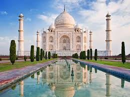
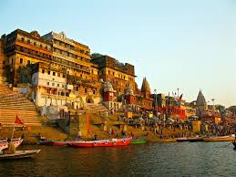
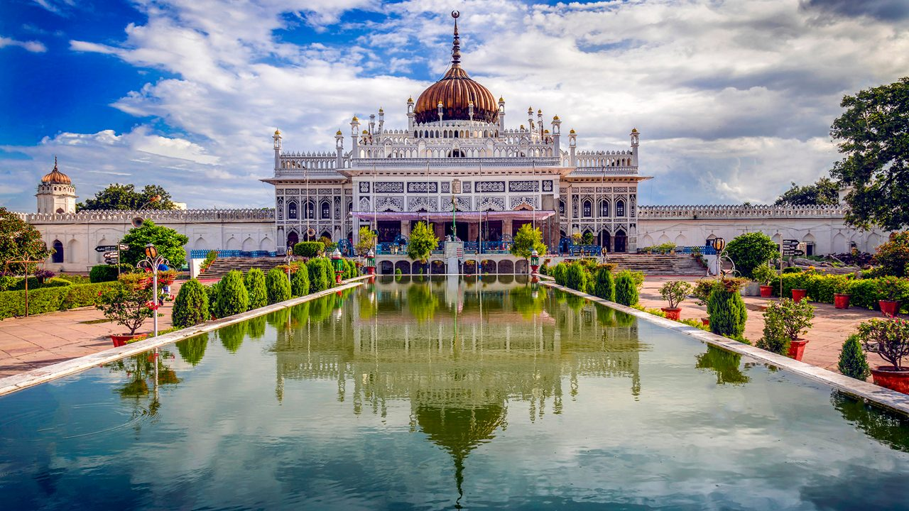
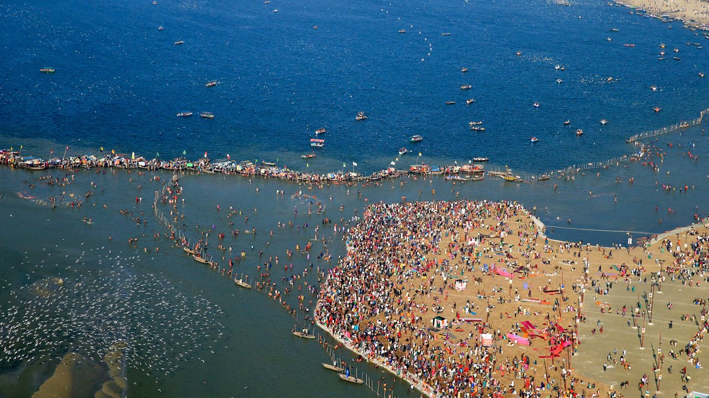

Uttar Pradesh
Agra

Agra is home to the world-famous Taj Mahal, one of the Seven Wonders of the World,
along with Agra Fort and Fatehpur Sikri.
- ⏰ Best Time: October – March
- 💰 Budget: ₹6,000 – ₹12,000 (3 days)
- 👨💼 Guide: Available near monuments
- 🌤️ Weather: Hot summers, cool winters
- 📍 Location: Uttar Pradesh, India
Varanasi

Varanasi, the spiritual capital of India, is known for its sacred Ganga Ghats,
evening Ganga Aarti, and Kashi Vishwanath Temple.
- ⏰ Best Time: November – March
- 💰 Budget: ₹5,000 – ₹9,000 (3 days)
- 👨💼 Guide: Available for temple and city tours
- 🌤️ Weather: Warm to pleasant, 10°C – 28°C in winter
- 📍 Location: Uttar Pradesh, India
Lucknow

Lucknow, the city of Nawabs, is famous for its Mughlai cuisine,
Bara Imambara, Chota Imambara, and rich cultural heritage.
- ⏰ Best Time: October – March
- 💰 Budget: ₹4,000 – ₹8,000 (2–3 days)
- 👨💼 Guide: Available for historical sites
- 🌤️ Weather: Pleasant winters, hot summers
- 📍 Location: Uttar Pradesh, India
Prayagraj (Allahabad)

Prayagraj is famous for the Triveni Sangam,
where the Ganga, Yamuna, and mythical Saraswati rivers meet.
It also hosts the grand Kumbh Mela.
- ⏰ Best Time: November – February
- 💰 Budget: ₹4,000 – ₹7,000 (2 days)
- 👨💼 Guide: Available for Sangam and historical sites
- 🌤️ Weather: Pleasant winters, hot summers
- 📍 Location: Uttar Pradesh, India